flowchart LR
A["1. Scelta della distanza<br/>d(x,y)"] --> B["2. Scelta del metodo<br/>di agglomerazione"]
B --> C["3. Costruzione del<br/>dendrogramma"]
C --> D["4. Scelta di k"]
D --> E["5. Caratterizzazione<br/>dei cluster"]
4 Cluster Analysis
L’obiettivo della cluster analysis è dividere un insieme di unità in gruppi (cluster) tali che le unità dello stesso gruppo siano fra loro simili e diverse dalle unità degli altri gruppi. È lo strumento centrale per la segmentazione di mercato.
I metodi si dividono in due famiglie. Quelli gerarchici costruiscono una sequenza di partizioni annidate, dalla più fine alla più grossolana, e lasciano la scelta di \(k\) alla fine; quelli non gerarchici (o partitivi) prendono \(k\) come dato di partenza e cercano direttamente la migliore partizione in \(k\) gruppi. La parte pratica del corso usa la prima famiglia, che è quella implementata in AnalisiMercato; la seconda è descritta più avanti (Sezione 4.11) perché serve a capire quando l’approccio gerarchico non basta, e il confronto fra le due chiude il capitolo (Sezione 4.12).
4.1 Approccio gerarchico agglomerativo
La versione gerarchica agglomerativa procede così: a ogni passo si fondono i due cluster più “vicini” finché tutte le unità sono in un unico cluster. Il risultato è un dendrogramma che si “taglia” a un’altezza scelta per ottenere \(k\) gruppi.
La Figura 4.1 mostra la procedura su otto unità. Si parte con otto gruppi di una sola unità ciascuno; a ogni passo si cerca la coppia di gruppi più vicina e la si fonde in un gruppo solo, e la distanza a cui la fusione avviene diventa l’altezza a cui i due rami si uniscono nel dendrogramma. Le prime fusioni riguardano unità quasi sovrapposte e avvengono quindi ad altezze piccole; le ultime uniscono gruppi ormai lontani e avvengono in alto. Tagliare il dendrogramma a una certa altezza equivale a interrompere l’agglomerazione appena prima della fusione successiva: il numero di rami intersecati dal taglio è il numero \(k\) di gruppi che si ottiene.
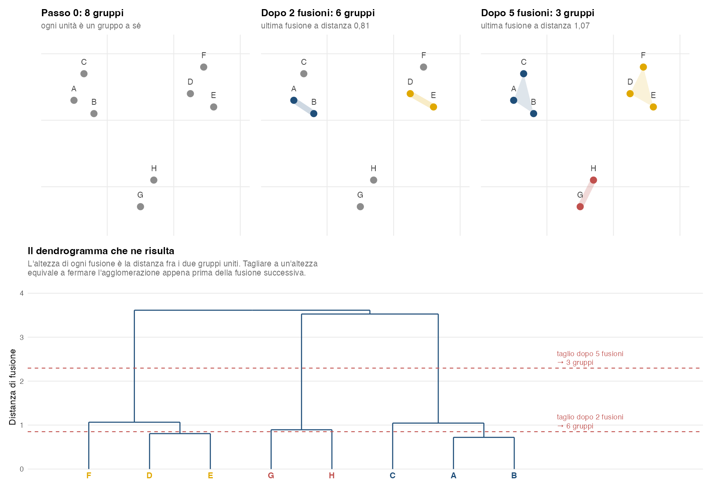
Nel dendrogramma della Figura 4.1 il taglio a tre gruppi cade in un intervallo di altezze molto ampio: da 1,07 a 3,53 non avviene alcuna fusione. È il segnale che quella partizione è netta: i tre gruppi restano gli stessi per un lungo tratto dell’agglomerazione.
4.2 Distanze: Euclidea o Manhattan?
La scelta della metrica di distanza dipende dal contesto, dalla natura dei dati e dall’obiettivo dell’analisi.
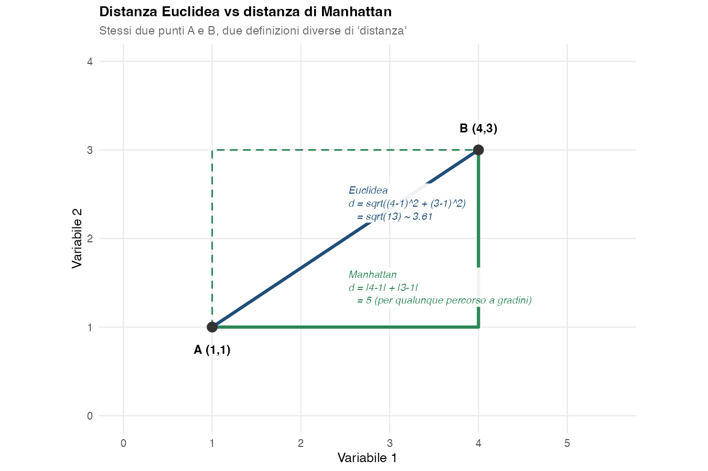
4.2.1 Distanza Euclidea
Due osservazioni \(\mathbf{x} = (x_1, \dots, x_p)\) e \(\mathbf{y} = (y_1, \dots, y_p)\) sono descritte dalle stesse \(p\) variabili, ed è su quelle \(p\) variabili che si calcola la distanza:
\[ d_E(\mathbf{x}, \mathbf{y}) = \sqrt{\sum_{j=1}^p (x_j - y_j)^2} \]
È la misura geometrica “diretta” della distanza tra due punti.
Quando usarla:
- Dati continui rappresentanti quantità misurabili su scale continue (lunghezza, peso, temperatura).
- Scale confrontabili: se le variabili hanno unità di misura o dispersioni molto diverse, conviene standardizzarle prima di calcolare la distanza. Attenzione però: la standardizzazione rende confrontabili le scale, non elimina la correlazione fra le variabili — di quella si occupa la Mahalanobis, più avanti.
- Gruppi compatti e «tondi»: è la scelta standard quando ci si attende gruppi raccolti attorno al proprio centro. Per la distanza euclidea uno scostamento conta allo stesso modo in qualunque direzione: i punti che stanno a una data distanza da un centro formano un cerchio (una sfera, con tre o più variabili). Per questo funziona meglio con gruppi tondi che con gruppi allungati lungo una diagonale, come quelli che si formano quando le variabili sono molto correlate fra loro.
Limitazioni:
- Sensibile alle scale diverse (richiede standardizzazione).
- Influenza forte degli outlier: il quadrato amplifica i punti lontani.
4.2.2 Distanza di Manhattan
\[ d_M(\mathbf{x}, \mathbf{y}) = \sum_{j=1}^p |x_j - y_j| \]
Detta anche distanza city block o del taxi, somma le differenze assolute lungo ogni dimensione.
Quando usarla:
- Variabili quantitative quando una distanza \(L_1\) è appropriata, conteggi e variabili quantitative discrete; eventualmente variabili ordinali trattate come scale a intervalli, cioè quando è ragionevole considerare equidistanti le modalità (per esempio una scala di accordo da 1 a 5). Non è invece appropriato applicarla a una nominale sostituendo le categorie con numeri arbitrari: quei codici introdurrebbero distanze che nel fenomeno non esistono (per le nominali ci sono Gower e le distanze di matching, più avanti).
- Cluster rettangolari in modelli a griglia o in spazi discreti.
- Molte variabili: quando le variabili sono tante (decine o più), le distanze fra le osservazioni tendono a diventare tutte simili. L’osservazione più vicina e quella più lontana finiscono quasi alla stessa distanza, e i gruppi si distinguono a fatica: è il fenomeno chiamato maledizione della dimensionalità. In alcuni casi la Manhattan conserva un po’ più di differenza fra distanze piccole e grandi rispetto all’Euclidea, ma non risolve il problema: anche con lei le distanze si avvicinano fra loro al crescere del numero di variabili \(p\).
- Dati con outlier: meno influenzata da valori estremi (non amplifica col quadrato).
Limitazioni:
- Come l’Euclidea, dipende dalle unità di misura: con variabili su scale diverse vanno prima standardizzate.
- Il risultato dipende dall’orientamento degli assi e da come le variabili sono state rappresentate: funziona bene quando le direzioni delle coordinate hanno un significato proprio.
- Non si abbina bene ai metodi di Ward e del centroide, che ragionano in termini di devianza e quindi di geometria euclidea: il dendrogramma si calcola comunque, ma il criterio perde la sua interpretazione (§ P-17).
4.2.3 Confronto diretto
| Criterio | Euclidea | Manhattan |
|---|---|---|
| Formula | \(\sqrt{\sum (x_i - y_i)^2}\) | \(\sum |x_i - y_i|\) |
| Quando | Quantitative su scale confrontabili, gruppi compatti | Conteggi e discrete, ordinali trattate come scale a intervalli, molte variabili |
| Outlier | Molto sensibile | Meno sensibile |
| Molte variabili | Le distanze diventano tutte simili | Distingue un po’ meglio, ma ha lo stesso problema |
4.3 Il problema delle correlazioni e Mahalanobis
Ignorare le correlazioni tra variabili (come fa l’Euclidea) può portare a problemi significativi.
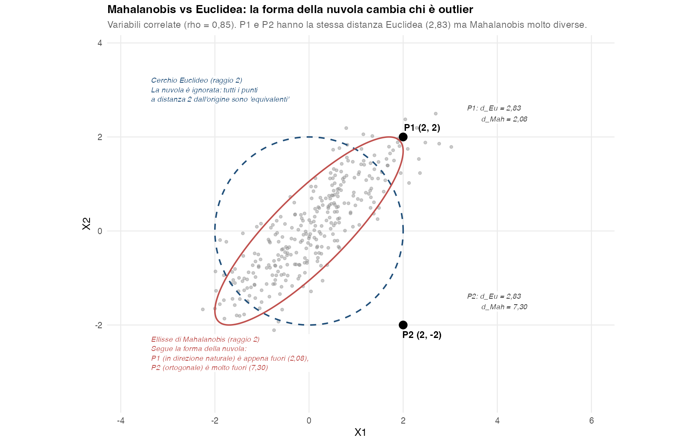
4.3.1 Sovrastima o sottostima delle distanze
Se due variabili sono correlate, non apportano informazioni del tutto indipendenti. Calcolare la distanza ignorando queste correlazioni può portare a:
- Sovrastima: variabili correlate contribuiscono come se fossero indipendenti, amplificando inutilmente la distanza.
- Sottostima: un punto che si scosta in direzione contraria alla correlazione (come P2 nella Figura 4.3) risulta, per l’Euclidea, lontano quanto uno che segue la direzione naturale dei dati (P1), mentre è molto più anomalo.
Esempio. Altezza e peso sono correlati positivamente. L’Euclidea li considera dimensioni indipendenti: un cambiamento su entrambe può apparire più “lontano” di quanto sia realmente.
4.3.2 Cluster distorti
La distanza euclidea tratta tutte le direzioni dello spazio (standardizzato) allo stesso modo. Di conseguenza i metodi costruiti su centroidi e somme dei quadrati euclidee tendono a favorire gruppi compatti e approssimativamente sferici, mentre con variabili fortemente correlate i gruppi hanno spesso forma ellittica: le separazioni che ne risultano possono essere sbagliate. L’Euclidea in sé non è un modello probabilistico e non assume letteralmente una distribuzione sferica; è il criterio di raggruppamento, applicato con quella geometria, a comportarsi così.
4.3.3 Peso sbilanciato delle variabili
La distanza euclidea somma i contributi delle singole variabili come se ognuna portasse un’informazione a sé. Se più variabili misurano in pratica la stessa cosa, quella cosa entra nel conto più volte.
Esempio. Un questionario ha tre domande sulla sensibilità al prezzo, fortemente correlate fra loro, e una sola sulla qualità. Due clienti che differiscono di un punto nell’atteggiamento verso il prezzo differiscono di circa un punto su tutte e tre le domande, e la loro distanza vale \(\sqrt{1^2 + 1^2 + 1^2} \approx 1{,}73\). Due clienti che differiscono di un punto sulla qualità distano invece 1. Il prezzo pesa quasi il doppio solo perché è misurato da più domande, e la qualità, misurata da una sola, risulta sottorappresentata.
La standardizzazione non corregge questo squilibrio: rende uguali le varianze delle singole variabili, non il numero di variabili dedicate a ciascun aspetto. I rimedi sono scegliere la base della segmentazione evitando variabili ridondanti, riassumere quelle che misurano lo stesso aspetto in un indice, oppure usare una distanza che tenga conto delle correlazioni, come la Mahalanobis.
4.3.4 Outlier multivariati nascosti
Un punto può risultare anomalo rispetto alla struttura congiunta delle variabili pur non avendo valori estremi su nessuna singola coordinata. Una distanza euclidea dal centroide può non evidenziarlo, perché non tiene conto della struttura di covarianza; la Mahalanobis misura invece quanto quel punto sia anomalo rispetto alla geometria complessiva della distribuzione.
4.3.5 Distanza di Mahalanobis: la soluzione
\[ d_{\text{Mah}}(\mathbf{x}, \mathbf{y}) = \sqrt{(\mathbf{x}-\mathbf{y})^\top \Sigma^{-1} (\mathbf{x}-\mathbf{y})} \]
dove \(\Sigma\) è la matrice di covarianza delle variabili. In pratica \(\Sigma\) si stima dai dati, e la distanza è affidabile solo quanto quella stima: la matrice deve essere invertibile (niente variabili collineari, più osservazioni che variabili) e pochi outlier bastano a deformarla, e con essa tutte le distanze. Inoltre la Mahalanobis standardizza gli scostamenti lungo le direzioni principali della covarianza: dà quindi più peso agli scostamenti lungo le direzioni di bassa varianza, che possono contenere soprattutto rumore e rendere la misura instabile.
La Mahalanobis:
- Tiene conto della correlazione fra variabili (usa \(\Sigma\)).
- Normalizza scale e varianze automaticamente.
- Identifica outlier multivariati.
Torniamo all’esempio del prezzo. Supponiamo per semplicità che le quattro domande abbiano varianza 1, che le tre sul prezzo siano correlate fra loro con \(r = 0{,}8\) e che quella sulla qualità non sia correlata con le altre. Le tre domande sul prezzo si muovono quasi sempre insieme: nei dati la direzione in cui crescono tutte e tre ha una varianza molto grande, perché somma tre variabili che vanno d’accordo. La Mahalanobis misura ogni spostamento in rapporto alla variabilità dei dati in quella direzione, e quindi tratta lo spostamento di un punto su tutte e tre le domande come un solo cambiamento di atteggiamento verso il prezzo. I due clienti che con l’Euclidea distavano 1,73 ora distano 1,07, quasi quanto i due che differiscono di un punto sulla qualità, che restano a distanza 1: il prezzo torna a contare circa una volta sola. Con correlazione perfetta le due distanze coinciderebbero.
Il rovescio della medaglia è quello già detto sopra. Uno spostamento contro la correlazione, per esempio un punto in più su una sola delle tre domande sul prezzo, nei dati è raro, e la Mahalanobis lo considera grande (1,86), anche quando è soltanto un’incoerenza nelle risposte. Per questo dà molto peso alle direzioni di bassa varianza, che possono contenere soprattutto rumore.
ConsiglioQuando ignorare le correlazioni è accettabile
- Variabili indipendenti o quasi indipendenti.
- Correlazioni trascurabili o rimosse via pre-processing.
- Contesti in cui la semplicità computazionale è prioritaria.
4.4 Distanza di Gower per dati misti
Euclidea, Manhattan e Mahalanobis richiedono tutte variabili quantitative. Nelle segmentazioni di mercato, però, la base contiene spesso insieme spesa e area geografica, età e tipo di cliente: variabili quantitative, ordinali e nominali nello stesso dataset. La distanza di Gower (Gower 1971) serve esattamente a questo caso.
L’idea è calcolare una dissimilarità variabile per variabile, ciascuna con la regola adatta al proprio tipo e riportata su una scala comune \([0,1]\), e poi combinarle in una media pesata. Per due unità \(i\) e \(l\):
\[ d_G(i, l) = \frac{\sum_j w_{il}^{(j)} \, d_{il}^{(j)}}{\sum_j w_{il}^{(j)}} \]
dove \(d_{il}^{(j)} \in [0,1]\) è la dissimilarità sulla variabile \(j\) e \(w_{il}^{(j)}\) il peso con cui entra nella media. Il peso vale 1 se le due unità si possono confrontare sulla variabile \(j\) e 0 altrimenti: quando il dato manca in una delle due, oppure quando la variabile è una binaria di presenza/assenza e l’attributo manca in entrambe (co-assenza). Il modulo elimina già prima del calcolo le unità con almeno un valore mancante nelle variabili della base, quindi nelle sue analisi un peso vale 0 solo per una co-assenza. Il contributo della singola variabile è:
- quantitativa: la differenza assoluta divisa per il campo di variazione della variabile, \(d_j = |x_j - y_j| / R_j\), con \(R_j = \max_j - \min_j\) calcolato su tutte le unità;
- nominale: \(d_j = 0\) se le due unità hanno la stessa modalità, \(d_j = 1\) altrimenti (è il simple matching, cioè l’indice di Sokal-Michener della sezione successiva). Vale anche per una variabile a due modalità entrambe informative, come il sesso;
- binaria di presenza/assenza (possiede un’auto elettrica, ha acquistato il prodotto): \(d_j = 0\) se l’attributo è presente in entrambe le unità (co-presenza), \(d_j = 1\) se è presente in una sola; la co-assenza non entra nel confronto (peso 0), come nell’indice di Jaccard;
- ordinale: la modalità viene sostituita dal proprio rango e trattata come una quantitativa.
La co-assenza resta fuori perché dice poco: che due clienti non possiedano un’auto elettrica non li rende simili, e se contasse come un accordo due unità risulterebbero vicine per tutto ciò che non hanno. Quale binaria sia di presenza/assenza e quale abbia due modalità entrambe informative non si capisce dai dati: lo decide chi fa l’analisi. Nel modulo le binarie di presenza/assenza vanno nella casella Binarie di presenza/assenza, codificate 0/1 (§ P-17); le altre restano nella base della segmentazione.
La Figura 4.4 segue il calcolo su due clienti descritti da cinque variabili di tre tipi diversi. Ogni variabile produce il proprio numero fra 0 e 1 con la regola del proprio tipo — e sono numeri che restano confrontabili fra loro proprio perché ciascuno è stato riportato sulla stessa scala. Le due unità dell’esempio abitano nella stessa area (dissimilarità 0) ma appartengono a tipi diversi (dissimilarità 1), differiscono di poco per età (0,18) e molto per spesa (0,53), e stanno a un solo gradino di distanza sui tre livelli della frequenza d’acquisto (0,50). La distanza di Gower è la media di questi cinque contributi.
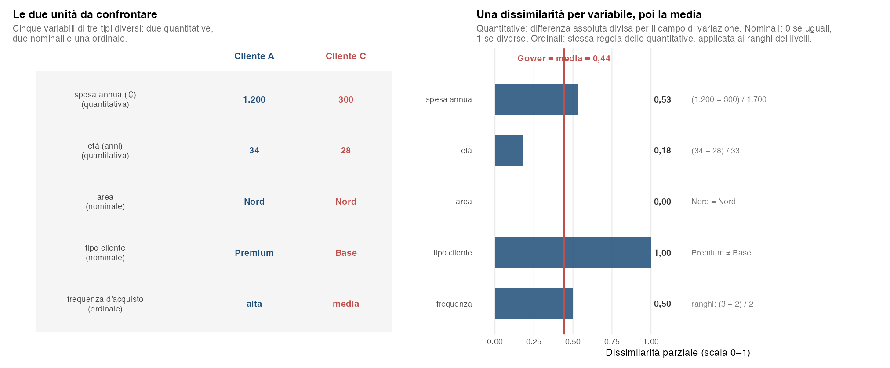
Il vantaggio è evidente: si lavora direttamente su dati misti senza trasformare arbitrariamente tutto in numerico. Restano due cautele. La prima: la divisione per il campo di variazione è già una normalizzazione, quindi standardizzare le variabili prima di usare Gower non serve: con questa distanza la casella Standardizza le variabili del modulo non ha alcun effetto. La seconda: ogni variabile contribuisce secondo la propria normalizzazione e il proprio peso, quindi la composizione della base conta, ed è il significato sostantivo delle variabili a dover guidare la scelta della metrica e di eventuali pesi. Se si inseriscono otto item Likert sullo stesso atteggiamento e una sola variabile di spesa, la distanza sarà governata dagli atteggiamenti, non perché siano più importanti ma perché sono più numerosi.
Gower è l’unica metrica del modulo adatta ai dataset misti: è il motivo per cui la base della segmentazione accetta anche variabili categoriali (§ P-17). Va ricordato però che gli indici basati sulla devianza rispetto ai centroidi — \(R^2\), deviazione standard media dei gruppi (RMSSTD, Root-Mean-Square Standard Deviation), indice di Caliński-Harabasz (CH) — non sono definiti su una base non interamente quantitativa: per la scelta di \(k\) restano il dendrogramma e il Delta G.
4.5 Indici di similarità per dati binari: Sokal-Michener vs Jaccard
Per dati binari (presenza/assenza, sì/no codificato 0/1) si ricorre a indici di similarità specifici.
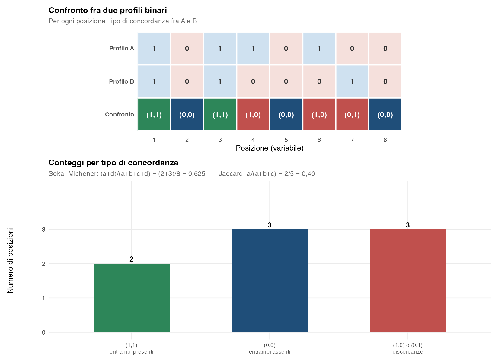
4.5.1 Sokal-Michener
\[ S_{\text{SM}} = \frac{a + d}{a + b + c + d} \]
dove \(a\) = coppie (1,1), \(d\) = coppie (0,0), \(b\) = coppie (1,0), \(c\) = coppie (0,1), e il pedice SM sta per Sokal-Michener.
Quando: sia gli accordi positivi (1,1) sia quelli negativi (0,0) sono rilevanti. Tipico nei questionari con risposte binarie, dove “no” condivisi sono informativi quanto “sì” condivisi.
4.5.2 Jaccard
\[ S_J = \frac{a}{a + b + c} \]
Ignora le coppie (0,0).
Quando: dati di presenza/assenza dove gli “zero” condivisi non sono informativi. Tipico in matrici sparse (es. presenza di specie in habitat, item acquistati).
4.5.3 Esempio
Due profili: \([1, 0, 1, 1, 0]\) e \([1, 0, 1, 0, 0]\).
- \(a = 2\) (posizioni 1 e 3), \(d = 2\) (posizioni 2 e 5), \(b = 1\) (posizione 4), \(c = 0\).
- \(S_{\text{SM}} = (2+2)/5 = 0{,}80\).
- \(S_J = 2/(2+1+0) = 0{,}67\).
Jaccard è più “severa” perché non considera l’accordo sugli zeri.
4.6 Adjusted Rand Index (ARI)
L’indice di Rand (RI, Rand Index) valuta la percentuale di coppie classificate in modo consistente in due partizioni:
\[ \text{RI} = \frac{a + d}{\binom{n}{2}} \]
dove \(a\) = coppie nello stesso cluster in entrambe, \(d\) = coppie in cluster diversi in entrambe.
Limite: tende a dare punteggi alti anche per partizioni casuali, soprattutto con molti cluster.
L’indice di Rand corretto (ARI, Adjusted Rand Index) corregge il RI considerando il caso atteso di partizioni casuali:
\[ \text{ARI} = \frac{\text{RI} - \mathbb{E}[\text{RI}]}{\max(\text{RI}) - \mathbb{E}[\text{RI}]} \]
La forma operativa che si usa per il calcolo concreto, a partire dalla tabella di contingenza fra le due partizioni, è:
\[ \text{ARI} = \frac{\displaystyle \sum_{ij}\binom{n_{ij}}{2} - \frac{\left[\sum_i \binom{a_i}{2}\right]\left[\sum_j \binom{b_j}{2}\right]}{\binom{n}{2}}} {\displaystyle \frac{1}{2}\left[\sum_i \binom{a_i}{2} + \sum_j \binom{b_j}{2}\right] - \frac{\left[\sum_i \binom{a_i}{2}\right]\left[\sum_j \binom{b_j}{2}\right]}{\binom{n}{2}}} \]
dove \(n_{ij}\) è il numero di osservazioni che cadono nel cluster \(i\) della partizione 1 e nel cluster \(j\) della partizione 2, \(a_i = \sum_j n_{ij}\) (totale di riga) e \(b_j = \sum_i n_{ij}\) (totale di colonna).
| Valore ARI | Significato |
|---|---|
| 1 | Partizioni identiche |
| ≈ 0 | Concordanza casuale (irrilevante) |
| < 0 | Concordanza peggiore del caso (rarissimo) |
4.6.1 Esempio di calcolo
L’idea operativa dell’ARI è: per ogni coppia di osservazioni si guarda se cadono nello stesso cluster (1) o in cluster diversi (0), separatamente nelle due partizioni. Poi si contano le concordanze (entrambi 0 o entrambi 1).
Consideriamo \(n = 6\) osservazioni numerate da 1 a 6 e due partizioni:
- Partizione P1: \(\{1, 2, 3\}\) e \(\{4, 5, 6\}\) — due cluster da 3 osservazioni.
- Partizione P2: \(\{1, 2, 3\}\), \(\{4, 5\}\), \(\{6\}\) — il primo cluster coincide con P1, il secondo si è “spezzato” in due.
4.6.1.1 Passo 1 — Matrice 6×6 degli indicatori per coppia
Costruiamo una matrice \(6 \times 6\) in cui ogni cella \((i, j)\) con \(i \neq j\) dice se le osservazioni \(i\) e \(j\) sono nello stesso cluster (1) o no (0). Per risparmiare spazio mettiamo nella stessa tabella entrambe le partizioni: il triangolo superiore (cella con \(i < j\)) per P1, il triangolo inferiore (\(i > j\)) per P2.
| 1 | 2 | 3 | 4 | 5 | 6 | |
|---|---|---|---|---|---|---|
| 1 | — | 1 | 1 | 0 | 0 | 0 |
| 2 | 1 | — | 1 | 0 | 0 | 0 |
| 3 | 1 | 1 | — | 0 | 0 | 0 |
| 4 | 0 | 0 | 0 | — | 1 | 1 |
| 5 | 0 | 0 | 0 | 1 | — | 1 |
| 6 | 0 | 0 | 0 | 0 | 0 | — |
Legenda: blu = P1 (sopra), verde = P2 (sotto).
4.6.1.2 Passo 2 — Confrontare le coppie e contare le concordanze
Per ognuna delle \(\binom{6}{2} = 15\) coppie distinte \((i, j)\) con \(i < j\) confrontiamo il valore in P1 e in P2:
| Coppia | P1 | P2 | Tipo |
|---|---|---|---|
| (1,2) | 1 | 1 | (1,1) — \(a\) |
| (1,3) | 1 | 1 | (1,1) — \(a\) |
| (1,4) | 0 | 0 | (0,0) — \(d\) |
| (1,5) | 0 | 0 | (0,0) — \(d\) |
| (1,6) | 0 | 0 | (0,0) — \(d\) |
| (2,3) | 1 | 1 | (1,1) — \(a\) |
| (2,4) | 0 | 0 | (0,0) — \(d\) |
| (2,5) | 0 | 0 | (0,0) — \(d\) |
| (2,6) | 0 | 0 | (0,0) — \(d\) |
| (3,4) | 0 | 0 | (0,0) — \(d\) |
| (3,5) | 0 | 0 | (0,0) — \(d\) |
| (3,6) | 0 | 0 | (0,0) — \(d\) |
| (4,5) | 1 | 1 | (1,1) — \(a\) |
| (4,6) | 1 | 0 | (1,0) — \(b\) |
| (5,6) | 1 | 0 | (1,0) — \(b\) |
Conteggio finale:
| Tipo | Significato | Numero |
|---|---|---|
| \(a\) | coppia (1,1) — stesso cluster in entrambe | 4 |
| \(d\) | coppia (0,0) — diverso in entrambe | 9 |
| \(b\) | coppia (1,0) — stesso in P1, diverso in P2 | 2 |
| \(c\) | coppia (0,1) — diverso in P1, stesso in P2 | 0 |
| Totale | 15 |
4.6.1.3 Passo 3 — Rand Index (RI)
Il Rand Index è semplicemente la frazione di coppie concordanti (entrambi 0 o entrambi 1) sul totale:
\[ \text{RI} = \frac{a + d}{\binom{n}{2}} = \frac{4 + 9}{15} = \frac{13}{15} \approx 0{,}867 \]
Cioè l’87% delle coppie è classificato nello stesso modo dalle due partizioni. Sembra un valore alto, ma il RI tende a essere “gonfiato” — specie quando i cluster sono molti — perché molte coppie cadono automaticamente in cluster diversi anche per puro caso.
4.6.1.4 Passo 4 — Adjusted Rand Index (ARI)
L’ARI corregge il RI per il valore atteso sotto modello ipergeometrico (partizioni indipendenti). Servono tre grandezze, tutte già implicite nel conteggio precedente:
- coppie stesso cluster in P1: \(a + b = 4 + 2 = 6\)
- coppie stesso cluster in P2: \(a + c = 4 + 0 = 4\)
- totale coppie: \(\binom{6}{2} = 15\)
Termine atteso:
\[ \mathbb{E} = \frac{(a+b)(a+c)}{\binom{n}{2}} = \frac{6 \cdot 4}{15} = 1{,}6 \]
Numeratore e denominatore dell’ARI:
\[ \text{Num} = a - \mathbb{E} = 4 - 1{,}6 = 2{,}4 \]
\[ \text{Den} = \tfrac{1}{2}\bigl[(a+b) + (a+c)\bigr] - \mathbb{E} = \tfrac{1}{2}(6 + 4) - 1{,}6 = 3{,}4 \]
Risultato:
\[ \boxed{\text{ARI} = \frac{2{,}4}{3{,}4} \approx 0{,}71} \]
Confronto con RI: il Rand Index dava 0,87, l’Adjusted Rand Index dà 0,71. La differenza è proprio la correzione per il caso atteso: il RI sovrastimava l’accordo perché molte coppie (specie nel triangolo P1=0, P2=0) sono “facilmente” classificate diverse anche da partizioni indipendenti.
4.6.1.5 Tre casi di confronto sul medesimo esempio
Mantenendo P1 = \(\{1,2,3\}, \{4,5,6\}\), vediamo come cambiano RI e ARI variando P2:
| P2 alternativa | Significato | RI | ARI |
|---|---|---|---|
| \(\{1,2,3\}, \{4,5,6\}\) | Identica a P1 | 1,00 | 1,00 |
| \(\{1,2,3\}, \{4,5\}, \{6\}\) | Quasi identica | 0,87 | 0,71 |
| \(\{1,2\}, \{3,4\}, \{5,6\}\) | Cluster sfalsati | 0,67 | 0,24 |
| \(\{1,4\}, \{2,5\}, \{3,6\}\) | Strutturalmente opposta | 0,40 | −0,36 |
Tre cose da notare:
- RI non è mai inferiore all’ARI (nella tabella coincidono solo nella prima riga, con partizioni identiche): la correzione per il caso atteso “sgonfia” il valore — l’ARI è una misura più severa e onesta.
- L’ARI scende verso zero più velocemente del RI: per partizioni “casuali” l’ARI tende a 0, mentre il RI resta lontano da zero (circa 0,5 con due gruppi, e sempre più vicino a 1 quando i gruppi aumentano), e per questo può ingannare.
- ARI può essere negativo, RI no: l’ultima riga (partizione opposta) dà ARI = −0,36 (peggio del caso), mentre il RI è 0,40 — un valore che a un’occhiata superficiale sembrerebbe “discreto” e invece nasconde una concordanza inferiore a quella casuale.
Per questo nei confronti fra partizioni si preferisce sempre l’ARI.
4.7 RMSSTD: una misura di compattezza dei cluster
La Root-Mean-Square Standard Deviation (RMSSTD) misura la “compattezza media” dei cluster:
\[ \text{RMSSTD} = \sqrt{\frac{\sum_{h=1}^{k} \sum_{i \in C_h} \sum_{j=1}^p (x_{ij} - \bar{x}_{hj})^2}{\sum_{h=1}^{k} (n_h - 1)\, p}} \]
dove:
- \(k\) = numero di cluster
- \(C_h\) = insieme delle unità del cluster \(h\), e \(n_h\) il loro numero
- \(p\) = numero di variabili
- \(\bar x_{hj}\) = media della variabile \(j\) nel cluster \(h\)
Numeratore = devianza entro i gruppi (WSS, within sum of squares), cioè la somma dei quadrati degli scarti di ogni unità dalle medie del proprio cluster; denominatore = gradi di libertà, \(n_h - 1\) per ogni cluster e per ciascuna delle \(p\) variabili. Poiché \(\sum_h (n_h - 1) = n - k\), la formula si scrive anche
\[ \text{RMSSTD} = \sqrt{\frac{\text{WSS}}{(n - k)\, p}} \]
ed è una deviazione standard: la dispersione tipica di una variabile dentro un cluster, nella stessa unità di misura delle variabili.
Lettura:
- Valore basso → cluster compatti (punti vicini alle medie dei cluster).
- Valore alto → cluster dispersi.
- Fra partizioni con lo stesso numero di cluster, per esempio ottenute con metodi diversi, è più compatta quella con l’RMSSTD più basso. Al crescere di \(k\), invece, l’RMSSTD tende a diminuire comunque, perché gruppi più piccoli sono anche più omogenei: per scegliere \(k\) non si cerca il valore più basso, ma il punto oltre il quale la discesa rallenta.
4.7.1 Esempio numerico
Due cluster, \(p = 2\) variabili, \(n_1 = n_2 = 3\). Calcoli:
- Cluster 1, dispersione: \(2{,}67\).
- Cluster 2, dispersione: \(1{,}33\).
- Gradi di libertà totali: \((3-1) \cdot 2 + (3-1) \cdot 2 = 8\).
- \(\text{RMSSTD} = \sqrt{(2{,}67 + 1{,}33) / 8} = \sqrt{0{,}5} \approx 0{,}707\).
4.7.2 Andamento al variare di \(k\) e confronto con l’\(R^2\)
L’RMSSTD si legge quasi sempre insieme all’\(R^2\), la quota della devianza totale (TSS, total sum of squares) spiegata dalla partizione:
\[ R^2 = 1 - \frac{\text{WSS}}{\text{TSS}} \]
Le due misure partono dalla stessa grandezza, la WSS, e la guardano da lati opposti: l’\(R^2\) dice quanta variabilità la partizione ha già spiegato, l’RMSSTD quanta ne resta dentro i gruppi. Sostituendo \(\text{WSS} = (1 - R^2)\,\text{TSS}\) nella formula dell’RMSSTD:
\[ \text{RMSSTD} = \sqrt{\frac{(1 - R^2)\,\text{TSS}}{(n - k)\, p}} \]
Quando l’\(R^2\) sale molto, l’RMSSTD scende molto, e viceversa: se c’è un gomito netto, di solito le due curve lo mostrano allo stesso \(k\). Non è però garantito, perché la radice quadrata e il fattore \(n-k\) cambiano la forma della curva dell’RMSSTD: un gomito poco marcato può cadere in punti diversi sulle due curve.
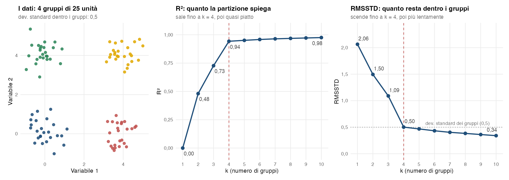
La Figura 4.6 lo mostra su 100 unità divise in quattro gruppi di 25, generati con deviazione standard 0,5 attorno a quattro centri (sono gli stessi dati della Figura 4.12, più avanti). Il dendrogramma è costruito con Ward e distanza euclidea; per ogni \(k\) si taglia l’albero e si calcolano le due misure.
- Con un solo gruppo (\(k = 1\)) l’\(R^2\) vale 0 e l’RMSSTD vale 2,06: è la deviazione standard dei dati senza alcuna divisione, che comprende anche le differenze fra i gruppi.
- Da 1 a 4 gruppi l’\(R^2\) sale a 0,48, 0,73 e 0,94 e l’RMSSTD scende a 1,50, 1,09 e 0,50. A ogni taglio il dendrogramma separa gruppi veri, e la variabilità fra quei gruppi passa da “residua” a “spiegata”.
- A \(k = 4\) l’RMSSTD vale 0,50, proprio la deviazione standard con cui sono stati generati i gruppi: trovati i gruppi veri, quello che resta è la variabilità interna a ciascuno.
- Oltre \(k = 4\) l’\(R^2\) guadagna poco più di 3 punti percentuali fino a \(k = 10\) (da 0,943 a 0,975) e la curva sembra piatta, mentre l’RMSSTD continua a scendere in modo visibile, da 0,50 a 0,34. Non è una contraddizione: spezzare gruppi già compatti riduce sempre un po’ la dispersione interna. Rispetto alla variabilità totale la riduzione è piccola, ma rispetto a quello che restava è grande: la parte non spiegata, \(1 - R^2\), passa da 0,057 a 0,025, meno della metà. L’\(R^2\) schiaccia questa riduzione vicino a 1, l’RMSSTD la mostra. Per questo sull’RMSSTD il gomito si riconosce dal cambio di pendenza, non da una curva che smette di scendere.
Con variabili standardizzate, come di solito nella segmentazione, ogni variabile ha varianza 1 e la devianza totale vale \((n-1)\,p\). La relazione diventa
\[ \text{RMSSTD} = \sqrt{(1 - R^2)\,\frac{n-1}{n-k}} \]
e, con \(n\) grande rispetto a \(k\), il rapporto \((n-1)/(n-k)\) è quasi 1: l’RMSSTD è in pratica \(\sqrt{1 - R^2}\). Con un solo gruppo vale 1, e in generale si legge come frazione della deviazione standard di ciascuna variabile: un RMSSTD di 0,6 vuol dire che dentro i gruppi le variabili variano, in media, circa il 60% di quanto variano nell’intero campione.
| \(R^2\) | RMSSTD | |
|---|---|---|
| Che cosa misura | La variabilità spiegata dai cluster | La variabilità che resta dentro i cluster |
| Scala | Quota fra 0 e 1, senza unità di misura | Deviazione standard, nell’unità di misura delle variabili |
| Con \(k = 1\) | 0 | La deviazione standard dei dati (1 con variabili standardizzate) |
| Al crescere di \(k\) | Non diminuisce mai, se le partizioni sono annidate come nel gerarchico | Di solito diminuisce, ma può risalire leggermente quando un’ulteriore divisione riduce pochissimo la WSS, perché si riduce anche il denominatore \(n - k\) |
| Che cosa cercare | Il gomito | Il cambio di pendenza; il valore dice anche quanto sono dispersi i gruppi |
In pratica l’RMSSTD non aggiunge all’\(R^2\) un criterio indipendente, perché viene dalla stessa WSS: di solito indica lo stesso gomito. Quello che aggiunge è la scala, perché dice quanto sono dispersi i gruppi nell’unità di misura delle variabili. Nel modulo i grafici dei due indici si ottengono insieme agli altri criteri per la scelta di \(k\) (§ P-18).
4.8 I cinque metodi di agglomerazione
A ogni passo si fondono i due cluster più vicini. La definizione di “vicino fra cluster” cambia col metodo:
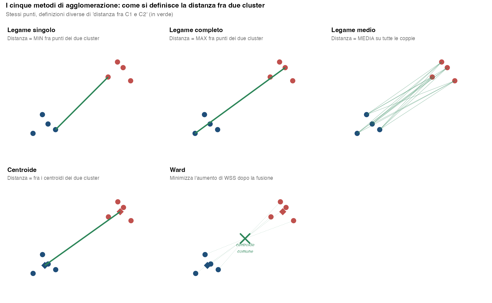
| Metodo | Definizione | Effetto |
|---|---|---|
| Legame singolo | \(\min d(x, y)\) fra unità dei due cluster | Cluster lunghi, “incatenati” |
| Legame completo | \(\max d(x, y)\) | Cluster compatti, con diametro massimo contenuto |
| Legame medio | Media di \(d(x, y)\) | Compromesso |
| Centroide | Distanza fra i centroidi | Può produrre inversioni del dendrogramma |
| Ward | Minimizza l’aumento della WSS | Cluster di varianza simile; default nella maggior parte dei casi |
4.8.1 Che forma prende il dendrogramma
La colonna “Effetto” della tabella non è un’etichetta astratta: si vede nella forma del dendrogramma. Conviene guardare due situazioni opposte, perché la lezione che se ne trae è diversa. In entrambe la distanza è l’Euclidea e l’unica cosa che cambia da un pannello all’altro è il metodo di agglomerazione.
4.8.1.1 Con gruppi netti, i cinque metodi concordano
Il primo caso è quello “facile”, ed è anche quello più frequente nei dati di scuola: tre gruppi compatti, ben separati, senza punti intermedi e senza outlier (Figura 4.8). Qui la distanza minima fra due gruppi diversi (\(3{,}8\)) è circa una volta e mezza la massima distanza interna a un gruppo (\(2{,}5\)): la struttura è abbastanza marcata perché qualunque regola di fusione ragionevole la ritrovi.
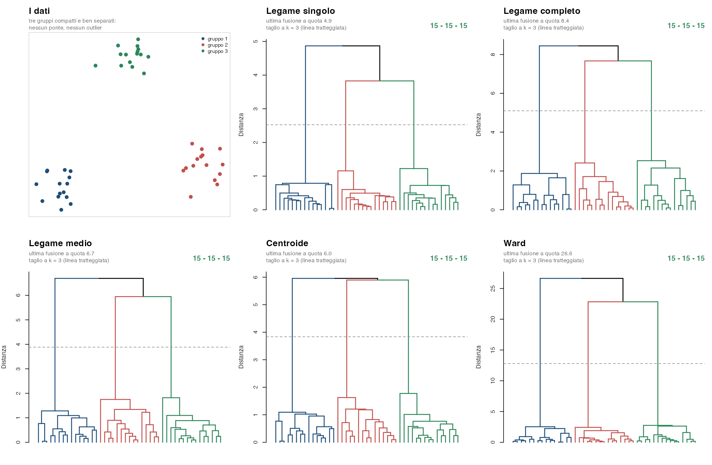
Due indicazioni operative da questo caso:
- Un dendrogramma con un “vuoto” evidente prima delle ultime fusioni è il segnale che i gruppi ci sono davvero. Il salto fra l’altezza delle fusioni interne ai gruppi e quella delle fusioni fra gruppi è ciò che gli indici della sezione seguente traducono in numeri.
- La sensibilità al cambio di metodo è un utile controllo esplorativo. Se soluzioni ottenute con distanze o linkage diversi risultano molto concordanti, la partizione è poco sensibile a quelle specifiche scelte metodologiche; se cambia molto, la segmentazione dipende fortemente da esse. Un accordo elevato fra algoritmi non dimostra però da solo che la struttura sia «vera», stabile nella popolazione o replicabile su nuovi dati. In
AnalisiMercatosi cambia voce nel menu Metodo di agglomerazione, si salva la colonna dei cluster e si confrontano le due partizioni con l’Adjusted Rand Index (Sezione 4.6): qui l’ARI vale 1 per tutte e dieci le coppie di metodi.
4.8.1.2 Con struttura ambigua, è il metodo a decidere
Il secondo caso è costruito apposta per mettere i metodi in disaccordo. La Figura 4.9 usa gli stessi cinque metodi su dati fatti di due nuclei ben separati, una fila di punti che li unisce come un ponte, e due outlier lontani da tutto. È una configurazione volutamente scomoda, ma non irrealistica: il ponte è il caso dei rispondenti “a metà strada” fra due segmenti, e gli outlier sono i clienti anomali che nessuna indagine reale evita.
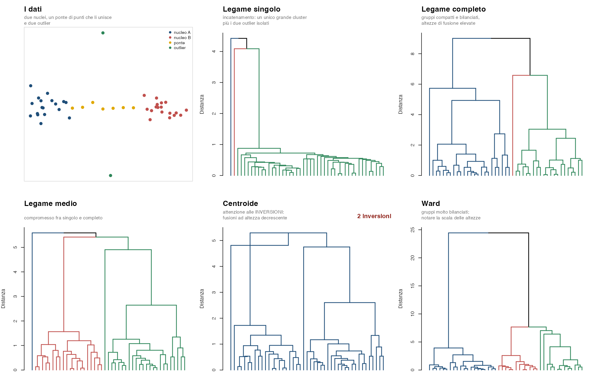
Nel legame singolo basta che esista una catena di punti vicini perché due gruppi si fondano: il ponte fa collassare i due nuclei in un unico cluster e il dendrogramma assume la tipica forma “a scala”, con moltissime fusioni a bassa altezza e pochi rami lunghi. Il legame completo guarda la coppia più lontana e quindi ignora il ponte: i due nuclei restano separati fino in cima e le altezze di fusione sono molto più elevate. Il legame medio sta in mezzo ai due. Il centroide produce qui due inversioni, cioè fusioni che avvengono più in basso della fusione precedente: la più evidente è in cima, dove l’ultima fusione, a quota \(4{,}81\), sta sotto la penultima, a quota \(5{,}29\). Ward genera i rami più bilanciati, ma va letto sulla sua scala: le altezze non sono distanze fra punti ma una trasformazione dell’incremento \(\Delta W\) della devianza interna provocato dalla fusione (con ward.D2, il metodo usato dal modulo, l’altezza vale \(\sqrt{2\,\Delta W}\)), che cresce con la numerosità dei gruppi fusi: per questo sono numericamente molto più grandi.
Tre letture da portare a casa:
- L’altezza dell’asse verticale non è confrontabile fra metodi. Nell’esempio il legame singolo arriva a \(\approx 4{,}4\), il completo a \(\approx 9\), Ward a \(\approx 24\): sono le stesse identiche distanze fra punti, riassunte con regole diverse. Un dendrogramma “più alto” non descrive dati più eterogenei.
- L’incatenamento del legame singolo è un comportamento, non un errore. È esattamente ciò che serve per riconoscere gruppi di forma allungata o irregolare; è invece dannoso quando i segmenti di mercato che cerchiamo sono addensamenti compatti, perché una manciata di rispondenti intermedi basta a saldare due segmenti distinti.
- Le inversioni del centroide vanno riconosciute a colpo d’occhio. Fra i cinque metodi, il centroide è l’unico che può produrle (lo stesso vale per il metodo della mediana, che il modulo non offre). Che cosa sono e perché nascono è spiegato qui sotto.
Che cos’è un’inversione. In un dendrogramma l’altezza di un nodo è la distanza a cui si sono fusi i due gruppi che quel nodo unisce. Con il legame singolo, completo e medio e con Ward ogni fusione avviene a un’altezza maggiore o uguale a quella della fusione precedente: salendo nell’albero le altezze crescono sempre. Si ha un’inversione quando una fusione avviene più in basso della fusione precedente.
Perché il centroide la produce. Con il centroide la distanza fra due gruppi è la distanza fra i loro baricentri. Quando due gruppi si fondono, il nuovo baricentro cade fra i due vecchi, e può essere più vicino a un terzo gruppo di quanto lo fosse ciascuno dei due. Bastano tre punti per vederlo (Figura 4.10). A e B distano 1,00, mentre C dista 1,03 sia da A sia da B: la coppia più vicina è A–B, che si fonde per prima a quota 1,00. Il baricentro del nuovo gruppo è il punto medio M fra A e B, e C dista da M soltanto 0,90. La seconda fusione, fra {A, B} e C, avviene quindi a quota 0,90, più in basso della prima. Nel dendrogramma il ramo che parte dal nodo {A, B} deve scendere per raggiungere la fusione con C: è questo «ramo che scende» il segno dell’inversione.
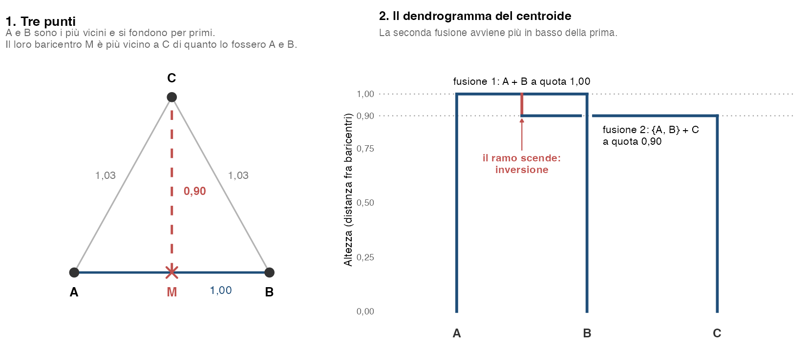
Nella figura con il ponte. In cima al dendrogramma del centroide della Figura 4.9 succede la stessa cosa. Alla penultima fusione, a quota 5,29, si uniscono le due metà della nuvola: a sinistra il nucleo A con due punti del ponte, a destra il nucleo B con il resto del ponte e l’outlier in basso. L’outlier in alto resta fuori, perché dista 5,43 dal baricentro della metà di sinistra e 5,53 da quello della metà di destra, più di quanto le due metà distino fra loro. Ma il baricentro della nuvola riunita cade nel mezzo, quasi sotto di lui, a distanza 4,81. L’ultima fusione avviene così a quota 4,81, più in basso della penultima: è il punto C dell’esempio, con le due metà al posto di A e B. La seconda inversione è minuscola e nel disegno quasi invisibile: due piccoli gruppi del nucleo A si fondono a quota 0,517, subito dopo una fusione a quota 0,534.
Che cosa comporta. Con un’inversione le altezze non sono più una scala affidabile. Un taglio orizzontale a quota 5, per esempio, troverebbe le due metà della nuvola ancora separate, perché si uniscono a 5,29, e l’outlier già unito a tutto il resto, perché si unisce a 4,81: una contraddizione, perché l’outlier si è unito a un gruppo che a quella quota non esiste ancora. Il modulo, infatti, non taglia l’albero ad altezza fissa ma secondo il numero di gruppi richiesto, che segue l’ordine delle fusioni e resta ben definito anche con le inversioni. Gli indici costruiti sulle altezze, invece, ne risentono: il Delta G a \(k = 2\) vale \(4{,}81 - 5{,}29 = -0{,}48\), e un Delta G negativo è il segnale numerico di un’inversione.
La conseguenza pratica arriva quando si taglia l’albero. La Figura 4.11 mostra le partizioni a \(k = 3\) ottenute dai cinque dendrogrammi precedenti.
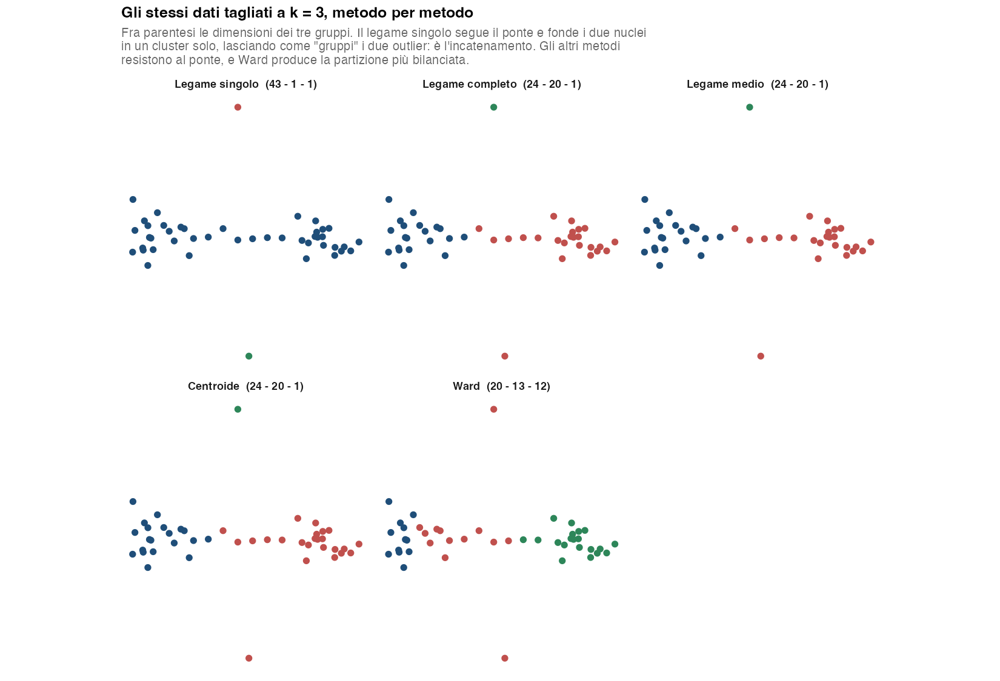
Il legame singolo restituisce \(43-1-1\): un unico grande cluster che ingloba entrambi i nuclei e il ponte, più i due outlier promossi a “segmenti” di una unità ciascuno — una partizione inutilizzabile per una segmentazione. Legame completo, legame medio e centroide separano correttamente i due nuclei (\(24-20-1\)), spartendosi il ponte, e isolano un solo outlier. Ward produce qui la partizione più bilanciata nelle numerosità (\(20-13-12\)) ma spezza il nucleo di sinistra. Attenzione a leggerlo come l’obiettivo del metodo: Ward sceglie a ogni passo la fusione che comporta il minore incremento della devianza interna, e questo favorisce gruppi compatti e, su certi dataset, anche di ampiezza simile — ma non impone cluster di uguale numerosità.
ImportanteQuanto pesa il metodo dipende dai dati
Il confronto fra le due figure è la sintesi della sezione. Con gruppi netti (Figura 4.8) i cinque metodi danno la stessa identica partizione: il metodo è quasi indifferente. Con una struttura ambigua (Figura 4.9), sugli stessi dati e con la stessa distanza, il segmento maggiore passa da 43 rispondenti col legame singolo a 20 con Ward. Non sapendo in anticipo in quale dei due mondi ci si trovi, la scelta del metodo di agglomerazione va dichiarata e giustificata insieme a quella della distanza — e messa alla prova rilanciando l’analisi con un metodo diverso, non provata a caso finché “escono” gruppi di ampiezza gradevole. In AnalisiMercato entrambe le scelte si fanno nel pannello della Cluster Analysis Gerarchica, e sono riportate nell’intestazione dei risultati proprio perché rientrano nella documentazione dell’analisi (Capitolo 25).
ConsiglioWard + Euclidea: il default
Per dati quantitativi, Ward + distanza euclidea è una combinazione naturale e teoricamente ben fondata, perché il criterio di Ward è formulato in termini di incremento della somma dei quadrati entro i cluster: è per questo che AnalisiMercato la propone come default. Non esiste però una combinazione universalmente «più robusta»: distanza e metodo di agglomerazione vanno scelti in base alla geometria dei dati e all’obiettivo dell’analisi.
La distanza di Mahalanobis si riconduce a una distanza euclidea dopo una trasformazione lineare (whitening), purché la matrice di covarianza sia ben definita: in quel caso Ward conserva la propria interpretazione nello spazio trasformato. Con Manhattan, Gower o Jaccard, invece, il dendrogramma si calcola ma non va letto come minimizzazione della devianza interna.
4.9 Scelta del numero di cluster
Non esiste un \(k\) “vero” oggettivo. Si ricorre a una convergenza di indici:
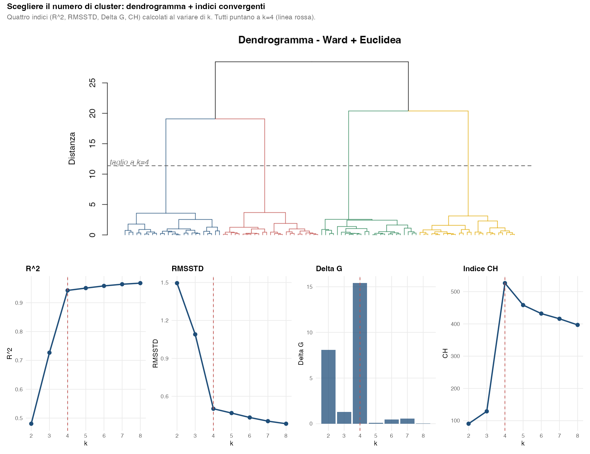
| Indice | Cosa cerca | Lettura |
|---|---|---|
| R² | Quota di varianza spiegata | Cresce con \(k\); cercare il “gomito” |
| RMSSTD | Compattezza dei cluster | Tende a diminuire al crescere di \(k\); cercare il punto oltre il quale i miglioramenti sono modesti |
| Delta G | \(H_k - H_{k+1}\), con \(H_k\) altezza della fusione da \(k\) a \(k-1\) gruppi | Un picco a \(k\) suggerisce di tenere \(k\) cluster (§ P-18) |
| Indice CH | \(\frac{\text{BSS}/(k-1)}{\text{WSS}/(n-k)}\), con BSS devianza fra i gruppi (between sum of squares) | Valori maggiori indicano una partizione migliore secondo il criterio CH; il massimo fra i \(k\) esaminati suggerisce una possibile scelta, da valutare con gli altri indici e con l’interpretabilità dei cluster |
Insieme al dendrogramma (taglio visivo dove il salto fra fusioni successive è più ampio), questi indici aiutano a decidere \(k\) in modo informato.
4.10 Limiti del clustering gerarchico
- Costo computazionale: la matrice delle dissimilarità richiede \(O(n^2)\) di memoria. Anche il tempo di calcolo cresce rapidamente con \(n\), ma la complessità temporale esatta dipende dall’algoritmo e dall’implementazione del metodo gerarchico. Oltre \(n \approx 5\,000\) il problema diventa pesante; oltre \(n \approx 10\,000\) è impraticabile senza tecniche specifiche.
- Sensibilità agli outlier: un outlier può restare isolato e formare un cluster a sé, come accade col legame singolo nella Figura 4.11, oppure venire assorbito in un gruppo di cui sposta il centroide, come accade lì con Ward.
- Decisioni soggettive: la scelta di distanza, metodo, \(k\) è guidata dai dati e dal contesto, non automatica.
A queste limitazioni si può rispondere con:
- pre-processing motivato (trattamento degli outlier, standardizzazione quando le scale lo richiedono);
- confronto fra partizioni alternative delle stesse unità con l’ARI (§ P-20).
4.11 Approccio non gerarchico: le k-medie
Il metodo gerarchico costruisce tutte le partizioni, da \(n\) gruppi a uno solo, e lascia a chi analizza il compito di sceglierne una tagliando il dendrogramma. Le k-medie (MacQueen 1967) fanno l’opposto: il numero di gruppi \(k\) è deciso prima di cominciare, e l’algoritmo cerca direttamente la migliore partizione in \(k\) gruppi, senza costruire alcuna gerarchia.
4.11.1 L’obiettivo
Data una partizione \(C = \{C_1, \ldots, C_k\}\) delle \(n\) unità, si chiama devianza interna (o within sum of squares) la somma delle distanze al quadrato di ogni unità dal centroide del proprio gruppo:
\[ W(C) = \sum_{h=1}^{k} \sum_{i \in C_h} \lVert \mathbf{x}_i - \bar{\mathbf{x}}_h \rVert^2 \qquad \text{con} \qquad \bar{\mathbf{x}}_h = \frac{1}{n_h} \sum_{i \in C_h} \mathbf{x}_i \]
Le k-medie cercano la partizione in \(k\) gruppi che rende \(W(C)\) minima: gruppi compatti attorno al proprio centro. È la stessa quantità che il metodo di Ward fa crescere il meno possibile a ogni fusione — i due metodi inseguono lo stesso obiettivo con strategie diverse, e ci torniamo più avanti (Sezione 4.12).
Provarle tutte non è un’opzione: il numero di modi di dividere \(n\) unità in \(k\) gruppi non vuoti esplode ben oltre qualsiasi capacità di calcolo (già con \(n = 25\) e \(k = 4\) si superano i \(10^{13}\)). Serve quindi un algoritmo che scenda verso un buon minimo senza esplorare tutto.
4.11.2 L’algoritmo
La procedura, dovuta nella sua forma standard a Lloyd (1982), alterna due mosse molto semplici:
- Inizializzazione. Si scelgono \(k\) punti di partenza come centroidi provvisori: tipicamente \(k\) unità estratte a caso dai dati.
- Assegnazione. Ogni unità viene assegnata al centroide più vicino. Si ottengono così \(k\) gruppi.
- Aggiornamento. Ogni centroide viene ricalcolato come media delle unità che gli sono state assegnate, e quindi si sposta.
- Ripetizione. Con i centroidi nella nuova posizione, alcune unità risultano ora più vicine a un centroide diverso: si torna al punto 2, finché non scatta uno dei criteri di arresto descritti sotto.
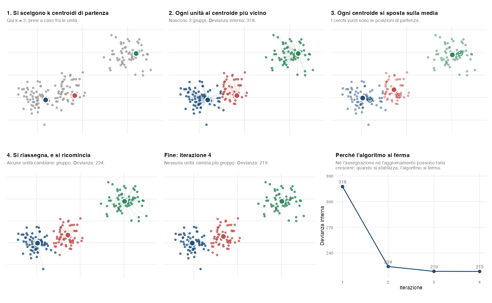
Quando ci si ferma. Si ripetono assegnazione e aggiornamento finché non vale uno di tre criteri:
- Convergenza: nessuna unità cambia gruppo rispetto all’iterazione precedente. Da quel momento i centroidi non si spostano più e ogni nuova iterazione darebbe lo stesso risultato. Nella Figura 4.13 succede alla quarta iterazione.
- Numero massimo di iterazioni: un tetto fissato in anticipo, che ferma l’algoritmo anche se non è arrivato alla convergenza. È una rete di sicurezza: in R è l’argomento
iter.maxdikmeans(), che vale 10 se non lo si cambia. Quando l’algoritmo si ferma per questo motivo R lo segnala con un avviso, e conviene alzare il tetto e rilanciare. - Soglia di guadagno: ci si ferma quando un’iterazione migliora la soluzione di pochissimo, cioè quando la devianza interna \(W\), o lo spostamento dei centroidi, cala meno di una soglia fissata in anticipo (la tolleranza). Nelle ultime iterazioni cambiano gruppo al più poche unità al confine fra due gruppi: continuare costerebbe calcoli senza cambiare davvero la soluzione.
Che la convergenza prima o poi arrivi non è un caso fortunato ma una garanzia: nessuna delle due mosse può far crescere \(W\). L’assegnazione manda ogni unità al centroide più vicino, quindi non può che ridurre (o lasciare invariata) la sua distanza; l’aggiornamento sostituisce il centro con la media, e la media è per definizione il punto che rende minima la somma delle distanze al quadrato dalle unità del gruppo. Ogni volta che un’unità cambia gruppo \(W\) scende (a parità di distanza, infatti, un’unità resta dove si trova), quindi una partizione già vista non può ripresentarsi; e poiché le partizioni possibili sono in numero finito, la convergenza arriva dopo un numero finito di iterazioni. Quante dipende dai dati: spesso poche, ma su dataset grandi e poco strutturati anche centinaia. Per questo serve il tetto del secondo criterio.
L’argomento chiarisce anche un vincolo che spesso passa inosservato: il passo di aggiornamento è ottimale perché la distanza usata è quella euclidea. Con una distanza diversa la media non è più il centro che minimizza la somma delle distanze, e la garanzia cade. È il motivo per cui le k-medie richiedono variabili quantitative e metrica euclidea, e per cui su dati misti si ricorre a una loro variante, le k-medoidi (algoritmo Partitioning Around Medoids o PAM, Kaufman e Rousseeuw 1990), in cui il centro di ogni gruppo non è una media ma una delle unità osservate — il medoide — e la distanza può essere qualsiasi, Gower compresa.
4.11.3 Il punto debole: il minimo è locale
La garanzia di convergenza dice che l’algoritmo si ferma, non che si ferma nel punto migliore. La partizione finale è un minimo locale di \(W\): da lì né l’assegnazione né l’aggiornamento la cambiano più, ma altrove può esistere una partizione con devianza interna molto più bassa. E quale minimo locale si raggiunga dipende interamente da dove si è partiti.
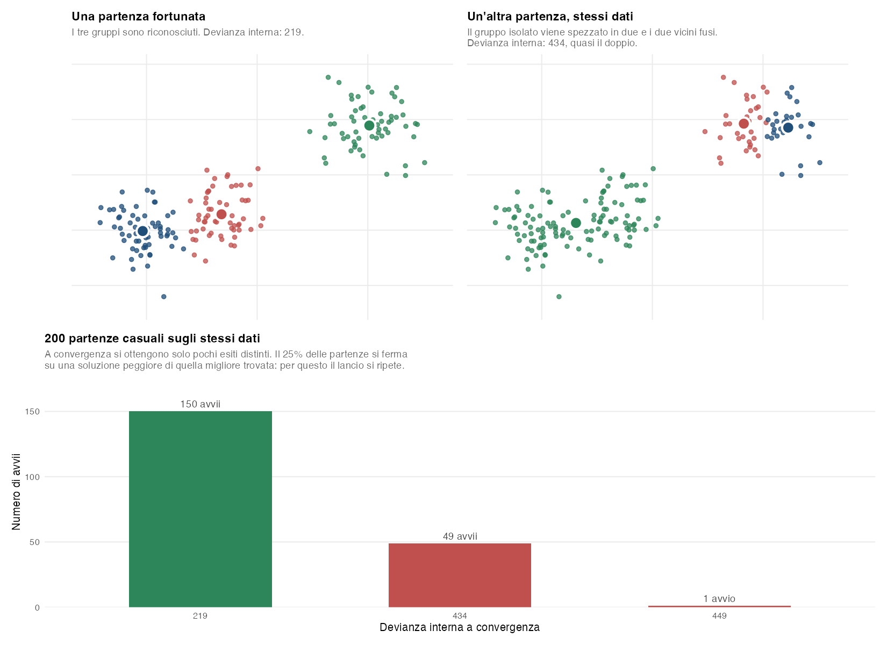
La contromisura è elementare e va sempre applicata: ripetere il lancio molte volte con inizializzazioni diverse e tenere la soluzione con la devianza interna più bassa. Nelle implementazioni standard è il parametro nstart (in R, kmeans(x, centers = k, nstart = 50)): il valore di default è 1, cioè il caso peggiore, e va sempre alzato. In alternativa si usano inizializzazioni non completamente casuali, come k-means++ (Arthur e Vassilvitskii 2007), che sceglie i punti di partenza lontani fra loro riducendo di molto la probabilità di finire in un minimo scadente, o si parte dai centroidi di una soluzione gerarchica.
Ne segue una proprietà da dichiarare sempre nel report: le k-medie non sono deterministiche. Due esecuzioni della stessa analisi sugli stessi dati possono restituire partizioni diverse se il seme casuale cambia. Il seme va quindi fissato e documentato, esattamente come per l’estrazione di un campione.
4.11.4 Che cosa presuppone
Il criterio della devianza interna non è neutrale: privilegia gruppi compatti, di forma approssimativamente sferica e di dimensione simile. Un gruppo allungato viene spesso spezzato in due, e un gruppo molto più numeroso degli altri tende a “perdere” le sue unità periferiche a favore dei gruppi vicini più piccoli. Valgono poi le stesse cautele dell’euclidea: le variabili vanno standardizzate quando le scale sono diverse, e gli outlier vanno trattati prima, perché la media non è robusta e un solo punto lontano sposta il centroide di tutto il gruppo.
Infine \(k\) va deciso in anticipo. Gli indici già visti per il gerarchico (Sezione 4.9) — \(R^2\), RMSSTD, indice CH — si calcolano anche qui, ma con una differenza importante: mentre nel gerarchico le partizioni a \(k\) e a \(k+1\) gruppi sono annidate per costruzione, con le k-medie ogni \(k\) richiede un’analisi indipendente e le soluzioni a \(k\) e \(k+1\) gruppi possono non avere alcuna relazione fra loro. Il \(\Delta G\) e il dendrogramma, che presuppongono la gerarchia, qui non esistono.
4.12 Gerarchico o non gerarchico?
I due approcci non sono in concorrenza: rispondono bene a domande diverse.
| Gerarchico agglomerativo | Non gerarchico (k-medie) | |
|---|---|---|
| Cosa produce | L’intera sequenza di partizioni, da \(n\) gruppi a 1 | Una sola partizione, in \(k\) gruppi |
| Scelta di \(k\) | Dopo, leggendo il dendrogramma e gli indici | Prima, come dato di partenza |
| Determinismo | Sì: stessi dati e stesse opzioni, stessa soluzione | No: dipende dall’inizializzazione, va fissato il seme |
| Numerosità gestibile | Fino a qualche migliaio di unità (\(O(n^2)\) di memoria) | Centinaia di migliaia e oltre (\(O(nkt)\)) |
| Dati e distanze | Una matrice di dissimilarità qualsiasi: Euclidea, Manhattan, Gower, Jaccard. Non ogni combinazione con il metodo è appropriata: Ward e centroide presuppongono una geometria euclidea | Solo quantitative con distanza euclidea (per gli altri casi: k-medoidi) |
| Revisione delle scelte | Nessuna: una fusione sbagliata non si annulla più | A ogni iterazione le unità possono cambiare gruppo |
| Forma dei gruppi | Dipende dal metodo: il legame singolo segue forme allungate, Ward cerca gruppi compatti | Gruppi compatti e di dimensione simile |
| Outlier | Formano cluster minuscoli, visibili nel dendrogramma | Vengono comunque assorbiti in un gruppo, spostandone il centroide |
| Lettura dei risultati | Il dendrogramma mostra anche la struttura intermedia | Solo l’assegnazione finale e i centroidi |
Due differenze meritano un commento, perché sono quelle che pesano davvero nella pratica.
La prima è l’irreversibilità. Il metodo gerarchico è greedy: a ogni passo prende la decisione migliore nell’immediato e non la rimette mai in discussione. Se due unità vengono fuse presto per effetto del rumore, resteranno insieme in tutte le partizioni successive, anche quando a posteriori si vedrebbe che appartengono a gruppi diversi. Le k-medie, al contrario, riassegnano ogni unità a ogni iterazione e possono correggere un errore iniziale — ma solo entro il \(k\) fissato, e solo fino al minimo locale in cui capitano.
La seconda è che Ward e le k-medie ottimizzano lo stesso criterio, la devianza interna, con strategie diverse: Ward in modo sequenziale e vincolato dalla gerarchia, le k-medie in modo iterativo e libero. Da qui la strategia combinata più usata nelle segmentazioni di mercato, quando la numerosità lo consente:
- si esegue un’analisi gerarchica con Ward su un campione gestibile, e si sceglie \(k\) con dendrogramma e indici;
- si calcolano i centroidi dei \(k\) gruppi così ottenuti;
- si lanciano le k-medie usando quei centroidi come inizializzazione, estendendo eventualmente la partizione a tutte le unità.
Il primo passo risolve il problema che le k-medie non sanno affrontare (quanti gruppi), il terzo quello che il gerarchico non sa affrontare (rivedere le assegnazioni, e lavorare su molte unità). Va però ricordato che il risultato finale è una partizione ottenuta in due tempi: nel report si dichiarano entrambi i passaggi, il seme usato e il numero di inizializzazioni.
NotaNel modulo
AnalisiMercato
AnalisiMercato implementa l’approccio gerarchico: le k-medie sono trattate qui per il confronto, e perché è a loro che rimanda il messaggio che il modulo mostra quando il dataset è troppo grande perché la matrice delle distanze sia calcolabile (§ P-16). In quel caso le strade sono due: lavorare su un sotto-campione, restando nel modulo, oppure passare a un metodo non gerarchico con un altro strumento.
4.13 Bibliografia di riferimento
- Everitt et al. (2011) — testo classico.
- Ward (1963) — il metodo originale.
- Caliński e Harabasz (1974) — l’indice CH.
- Hubert e Arabie (1985) — Adjusted Rand Index.
- Gower (1971) — coefficiente generale di Gower per dati misti.
- MacQueen (1967) — le k-medie; Lloyd (1982) per l’algoritmo nella forma oggi standard.
- Kaufman e Rousseeuw (1990) — k-medoidi (PAM) e clustering su dissimilarità qualsiasi.
- Arthur e Vassilvitskii (2007) — k-means++, inizializzazione che riduce il rischio di minimi locali scadenti.